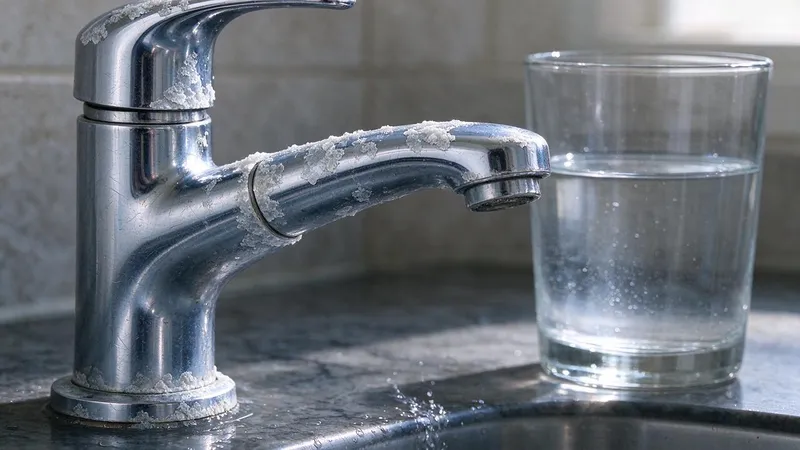

The Hard Truth About Texas Water
Here in Texas, we love our state, but one thing many of us don't love is our hard water. From the Panhandle down to the Gulf Coast, and especially across the limestone-rich areas like the Hill Country and much of North Texas, our water carries a high mineral content. These minerals, primarily calcium and magnesium, are picked up as water flows through our natural geology. While not harmful to drink, these dissolved minerals cause a host of problems for your home's plumbing system and appliances. Understanding the impact of hard water is the first step to knowing when a water softener becomes a smart investment, not just a luxury.
What Exactly is Hard Water Doing to Your Home?
You might already be seeing the signs without realizing the cause. Hard water leaves behind scale, which is a chalky buildup of mineral deposits. This scale can be visible on showerheads, faucets, and even dishes coming out of the dishwasher. But the real damage happens out of sight. Inside your pipes, water heaters, and appliances like washing machines and dishwashers, scale builds up, restricting water flow and reducing efficiency. For tankless water heaters, this buildup can be particularly problematic, leading to frequent maintenance calls or even premature failure. For traditional tank water heaters, it coats the heating elements, making them work harder and use more energy to heat your water.
The Hidden Costs of Hard Water
The problems caused by hard water translate directly into financial costs for Texas homeowners. Let's break down where your money might be going without a water softener:
- Appliance Lifespan: Appliances that use water, such as dishwashers, washing machines, and water heaters, can have their operational life cut short by several years due to mineral buildup. Replacing these big-ticket items more frequently adds up.
- Energy Bills: As scale builds up on heating elements in water heaters, they become less efficient, requiring more energy to achieve the same water temperature. This leads to higher utility bills every month.
- Plumbing Repairs: Mineral deposits can clog pipes, reduce water pressure, and even contribute to corrosion in some plumbing systems. This can necessitate expensive repairs or even pipe replacement over time.
- Soap and Detergent Usage: Hard water reacts with soaps and detergents, making them less effective. This means you have to use more laundry detergent, dish soap, and even shampoo to get the same results, increasing your household expenses.
- Cleaning Supplies: Removing hard water spots and scale from fixtures and surfaces requires specialized cleaners and more effort, adding to your cleaning product budget and time spent scrubbing.
How a Water Softener Pays for Itself
Installing a water softener is an investment, but for many Texas homes, it's an investment that offers a significant return. By removing those problematic calcium and magnesium ions, a water softener eliminates scale buildup. This immediately starts saving you money in several key areas. Your appliances will last longer, reducing the frequency of costly replacements. Your water heater will operate more efficiently, lowering your energy bills. You'll use less soap and detergent, cutting down on grocery expenses. Plus, your plumbing system will be protected, minimizing the need for future repairs. The improved water quality also means cleaner dishes, softer laundry, and healthier-feeling skin and hair, adding to your overall home comfort.
The typical cost for a quality whole-home water softener system, including installation, can range from $2,500 to $5,000, depending on the system size, type, and complexity of the installation. While this is a notable upfront cost, many Texas homeowners find that the savings on energy, appliance longevity, and cleaning supplies can offset this investment within 3 to 7 years. After that, the savings continue to accrue, making it a wise long-term financial decision for your home.
When to Call a Professional
Deciding on the right water softener for your home, and ensuring it's installed correctly, is crucial for its effectiveness and longevity. Factors like your home's water usage, the hardness level of your local water, and the size of your household all play a role in selecting the appropriate system. If you're experiencing the tell-tale signs of hard water and are ready to explore the benefits of a water softener, it's time to consult with experts. The team at DFJ Plumbing understands the specific water challenges faced by Texans. We can test your water, assess your home's needs, and recommend a tailored solution that fits your budget and provides lasting relief from hard water issues. Don't let hard water erode your home's value and comfort any longer. Give us a call today at (737) 405-5978 to schedule a consultation.
Need a licensed plumber in Texas?
DFJ Plumbing answers 24/7 and offers same-day service across Texas.